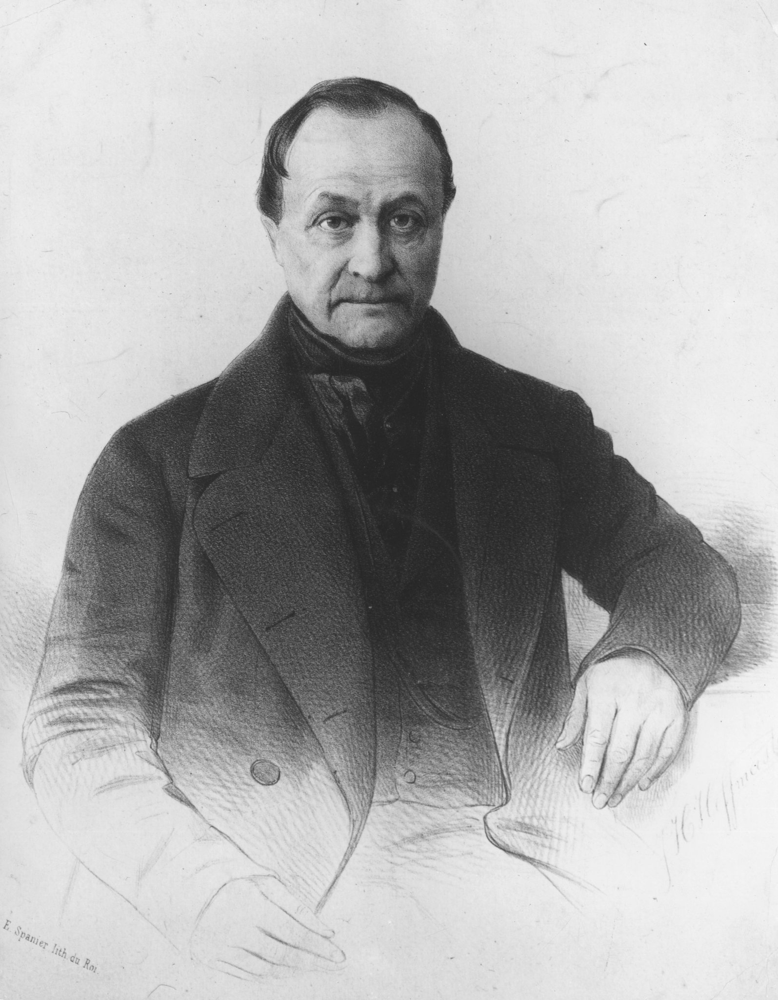
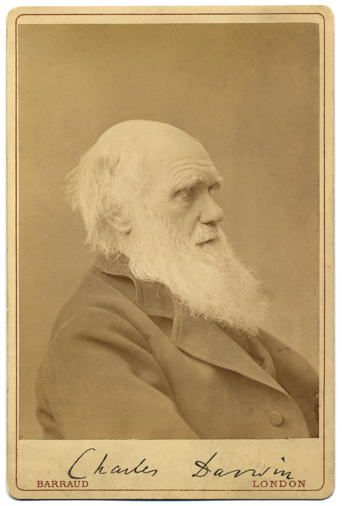
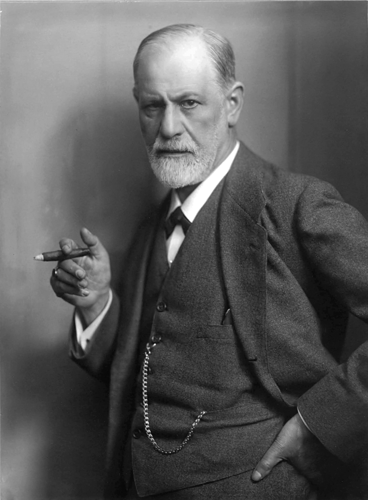

14. gaia · XIX. mendea: positibismoa eta susmoaren filosofoak
§54 · Comte eta positibismoa
Zientziarekiko fedea. XIX. mendeak zientzia modernoaren izugarrizko ospea jasotzen du oinordetzan: Newtonen fisikak erakutsia zuen naturak giza arrazoiak aurki ditzakeen legeei obeditzen diela (§33), eta arrakastak etengabe pilatzen ari ziren. Auguste Comtek (1798-1857) ondorio erradikal bat ateratzen du arrakasta horretatik: ezagutza baliozko bakarra zientifikoa da, eta iritsi da haren metodoa gizartearen azterketara ere hedatzeko ordua. Jarrera horri positibismoa deitu zion, eta harekin, gainera, diziplina berri bat sortu zuen: soziologia.

Hiru egoeren legea. Haren filosofiaren muina jakintzaren historiari buruzko lege bat da. Comtek dio gizadiak (eta baita zientzia bakoitzak ere, eta baita norbanako bakoitzaren adimenak ere) hiru egoera igarotzen dituela, bata bestearen ondoren, mundua azaltzeko moduan. Egoera teologikoan, fenomenoak izaki naturaz gaindikoen borondatearen bidez azaltzen dira: gauzak beren gogara mugitzen dituzten jainkoak. Egoera metafisikoan, jainko horien ordez indar eta esentzia abstraktuak jartzen dira («natura», «bizi-printzipioa»); tarteko fase kritiko bat da, artean espekulatiboa. Egoera positiboan, azkenik, arrazoiak uko egiten dio azken kausez eta gauzen «zergatiaz» galdetzeari (inoiz ez baititugu ezagutzerik izango), eta fenomenoak nola erlazionatzen diren deskribatzen duten legeak aurkitzera mugatzen da, behaketaren eta arrazoiaren bidez. Espiritu positiboa ez da baikorra: zientifikoa da1. Haren leloa hau izan liteke: «jakin, aurreikusteko; aurreikusi, ahal izateko»: legeak ezagutzea, gertakariak aurreratzeko eta, horrekin, haien gainean jarduteko.
Soziologiaren jaiotza. Zientziak ez dira denak batera iristen egoera positibora, konplexutasun gero eta handiagoaren hurrenkeran baizik: lehenik orokorrenak eta bakunenak (matematika, astronomia, fisika), gero kimika eta biologia, eta azken-azkenik guztietan konplexuena, gizartearen zientzia. Comtek fisika soziala deitu zion lehenik, eta soziologia gero, berak asmatutako hitza. Haren proiektua zen gizartea fisikak materia aztertzen duen zorroztasun beraz aztertzea, estatika soziala (gizarte-ordena batuta mantentzen duena) eta dinamika soziala (aurrerabidearen eta aldaketa historikoaren legeak) bereiziz. Ez kasualitatez laburbildu zuen bere programa gaur egun oraindik banderaren batean ageri den formula batean: «ordena eta aurrerabidea». Soziologiak zientzien eraikina koroatu behar zuen, eta iraultzek astindutako gizarte baten berrantolaketa gidatu.
Irismena eta mugak. Positibismoak, hala, zientzian (giza aurrerabidearen motor gisa) XIX. mendeak zuen konfiantza handia adierazten du, eta ondare iraunkor bat uzten du: gizartea metodo zientifikoz aztertzeko ideia. Baina haren tesirik sendoena (jakintza zientifikoa bakarrik dela baliozkoa, eta teologia eta metafisika gainditutako etapak direla) haren alderik ahulena ere bada. Ezagutza legitimo oro zientzia enpirikoetara murriztea, eta neurtzen uzten ez den guztia alferrikakotzat baztertzea, zientifizismo modu bat da, geroko filosofiak sakon eztabaidatuko zuena2. Zientziak gauza asko azaltzen ditu; galdera da ea dena azaltzen duen, eta ea haren neurritik ihes egiten duenak, horregatik beragatik, zentzurik ez duen.
§55 · Susmoaren filosofoak: Marx, Nietzsche eta Freud
Konfiantzatik susmora. Filosofia moderno osoak kontzientzian jarria zuen konfiantza. Descartesek pentsatzen dut hura ziurtasunaren harkaitz bihurtu zuen (§36); Kantek arrazoi autonomoan jarri zuen ezagutzaren eta moralaren oinarria (§50, §51); Ilustrazioak uste zuen arrazoia gardena zela bere buruarentzat (§47). XIX. mendeak kontrako susmoa inkubatzen du: kontzientzia ez dela nagusi bere etxean, pentsamendu libre eta arrazionaltzat hartzen duguna kontrolatzen ez ditugun indar ezkutuen azaleko efektua dela. XX. mendean jada, Paul Ricoeur (1913-2005) filosofoak Susmoaren Eskola izenaz bataiatu zuen korronte hori, eta Marxi, Nietzscheri eta Freudi susmoaren hiru maisuak deitu zien Taula 12: bakoitzak berehalako kontzientziaz mesfidatzen irakasten du, eta haren atzean kausa ezkutu bat deszifratzen.
Darwin, aurrekaria. Hiru horiek baino lehen, astinaldi zientifiko batek prestatua zuen lurra; Filosofia 1ean ikasi zenuen. Charles Darwinek (1809-1882) 1859an argitaratu zuen Espezieen jatorria, eta hautespen naturalaren teoriarekin gizakia kreazioaren erdigunetik kanporatu zuen: aurrerantzean ez zen jainko-asmo baten obra berezia, animalien arteko animalia bat baizik, prozesu itsu baten emaitza. Freudek berak deskribatuko zuen kolpe hori giza harrotasunari ezarritako hiru umiliazio handietako bat bezala: Kopernikok Lurra kosmosaren erdigunetik atera zuen (§33), Darwinek gizakia biziaren erdigunetik atera zuen, eta psikoanalisiak ni kontzientea aterako zuen adimenaren erdigunetik. Darwin ez da, zorrotz hitz eginda, susmoaren filosofo bat, baina haren deszentratze biologikoa da gero datozen hirurak adoretzen dituen atzeko oihala.

Marx: kontzientziaren susmoa. Karl Marxek (1818-1883) kontzientzia ideologia gisa desmaskaratzen du. Gure ideiak, balioak eta sinesmenak ez omen dira espirituaren sorkuntza libreak, baldintza material eta ekonomikoen eta klase menderatzailearen interesen isla baizik. «Ez du kontzientziak izatea determinatzen —idazten du—; izate sozialak determinatzen du kontzientzia». Erlijioa, urrutira joan gabe, ustiapen erreala ezkutatzen duen kontsolamendu iluzoriozkoa da harentzat: «herriaren opioa». Pentsamendu bat benetan ulertzeko, galdetu behar da zer interesen zerbitzura dagoen. Haren azterketa patxadatsuak hurrengo gaian itxaroten digu (§57–§58).
Nietzsche: moralaren susmoa. Friedrich Nietzschek (1844-1900) sakratutzat ditugun balioen kontra zuzentzen du susmoa. Moralaren atzean ez omen dago ez jainko-agindu bat, ez arrazoi hutsa, baizik eta bizitza, sena, botere-nahia eta, sarritan, ahulen gaitzondoa. Haren genealogiak ez du galdetzen balio bat egiazkoa den, baizik eta nondik datorren eta nori egiten dion mesede. Eta «Jainkoa hil da» aldarrikatzen du: mendebaldeko moralari eusten zion oinarria desagertu egin da, eta oraindik ez ditugu haren ondorioak neurtu. Aurrerago irakurriko dugu sakonean (§59–§61).
Freud: niaren susmoa. Sigmund Freudek (1856-1939) kontzientziara beraraino eramaten du susmoa: ni kontzientea inkontzienteak —desira erreprimituek eta bulkadek— gobernaturiko psike baten punta ikusgarria baino ez da, eta indar horiek guk aitortzen duguna baino askoz gehiago erabakitzen dute. Geure buruari ematen dizkiogun arrazoiak, maiz, ezagutzen ez ditugun motiboen arrazionalizazioak dira. Haren pentsamenduari hurrengo atala eskaintzen diogu (§56).
Keinu komuna. Hirurek desberdin dute desmaskaratzen dutena (ekonomia, botere-nahia, inkontzientea), baina keinu bera partekatzen dute: berehalako kontzientziaz susmatzea eta haren atzean hura azalduko duen kausa ezkutu bat bilatzea. Haiekin, krisian sartzen da arrazoi garden eta subirano batean modernitateak zuen konfiantza (§47, §51): subjektuak utzi egiten dio oinarri seguru izateari, deszifratu beharreko zerbait bihurtzeko. XIX. mendeko birarik sakonena da, eta oraindik ere determinatzen du geure buruaz pentsatzeko dugun modua.
| Maisua | Kontzientzia zera da… (desmaskaratzen duena) | Hura gobernatzen duen kausa ezkutua | Susmoaren metodoa | Non aztertzen den |
|---|---|---|---|---|
| Marx (1818-1883) | ideologia: klase menderatzailearen interesen isla | baldintza material eta ekonomikoak («izate sozialak kontzientzia determinatzen du») | ideia bat zer interesen zerbitzura dagoen aztertzea | §57-§58 |
| Nietzsche (1844-1900) | morala: sakratutzat hartutako balioak | bizitza, sena, botere-nahia, gaitzondoa | genealogia: balio bat nondik datorren eta nori egiten dion mesede | §59-§61 |
| Freud (1856-1939) | ni kontzientea, itxuraz bere buruaren jabe | inkontzientea: desira erreprimituak eta bulkadak | psikoanalisia: asoziazio librea eta ametsen interpretazioa | §56 |
§56 · Freud: haren pentsamendurako sarrera
Psikoanalisia. Vienako mediku eta neurologoa, Freud psikoanalisiaren sortzailea izan zen; psikoanalisia, aldi berean, adimenaren teoria bat da eta sufrimendu psikikorako terapia bat. Bere garaiko medikuntzak kausa organikorik aurkitzen ez zien neurosiak zituzten pazienteak artatuz, gizakiaren irudi berri eta asaldagarri batera iritsi zen, gizakia funtsean animalia arrazional gisa marrazten zuen erretratu zaharrarekin hausten duena.

Inkontzientea. Haren aurkikuntza nagusia da bizitza psikikoaren zatirik handiena inkontzientea dela. Kontzientzia izebergaren punta baino ez da; haren azpian, desira, oroitzapen eta bulkada multzo urperatu bat hedatzen da: ez dugu hautematen, baina gure pentsamenduak, gure egintzak eta gure sintomak determinatzen ditu. Bizitza psikikoan ezer ez da halabeharrez gertatzen: hutsegiteek (lapsusak, azalpenik gabeko ahazteak) eta ametsek ere zentzu ezkutu bat dute. Horri determinismo psikikoa deritzo.
Bi topikak. Freudek elkarren segidako bi eredurekin deskribatu zuen aparatu psikikoa. Lehen topikan hiru maila bereizten ditu: kontzientea (oraintxe bertan hautematen duguna), prekontzientea (kontzientea ez dena baina izatera irits daitekeena, gogora ekartzen dugun oroitzapen bat bezala) eta inkontzientea (errepresioak kontzientziatik aktiboki aparte mantentzen duena, itzultzeari gogor egiten diona). Bigarren topikan, helduagoan, gatazkan dauden hiru instantzia deskribatzen ditu: Id-a, bulkaden gordailu inkontzientea, plazer-printzipioaren arabera dabilena eta berehalako asebetetzea eskatzen duena; egoa, errealitatearekin negoziatzen duena eta errealitate-printzipioaren arabera dabilena; eta supergoa, gurasoen eta gizartearen arauak barneratzen dituena eta epaitzen eta zentsuratzen duen kontzientzia moral gisa jarduten duena. Egoa etengabeko tentsioan bizi da, Id-aren eskakizunen, supergoaren debekuen eta kanpo-munduaren mugen artean estututa.
Bulkadak. Aparatu guztia mugitzen dutenak bulkadak dira, gorputzezkoaren eta psikikoaren arteko mugan kokatutako indarrak. Freudek bi multzotan bildu zituen: Eros, bizi-bulkada (energia sexuala edo libidoa, plazera, batasuna eta kontserbazioa bilatzen dituena), eta, geroago, Tánatos, heriotza-bulkada, erasora, suntsipenera eta bizigabera itzultzera bultzatzen duena. Giza bizitza bi indar horien jokoa eta gatazka da. Eta sexualitatea, zentzu zabalean ulertua eta haurtzarotik bertatik presente dagoena, garapen psikikoaren motor handietako bat da; tesi horrek eskandalizatu egin zuen bere garaia.
Metodoa. Nola iritsi inkontzientera, definizioz ezkutatzen bada? Freudek psikoanalisiaren metodoa asmatu zuen horretarako. Haren bide nagusiak dira asoziazio librea (pazienteak burura datorkion guztia esaten du, bere burua zentsuratu gabe); ametsen interpretazioa («inkontzienterako errege-bidea»), non eduki agerikoa (amesten eta gogoratzen duguna) eta eduki latentea (amets horrek mozorrotzen duen desira erreprimitua) bereizten baititu; eta hutsegiteei eta sintomei arreta jartzea, horiek salatu egiten baitute errepresioak ezkutatzen duena. Sendatzea, funtsean, erreprimitua kontziente egitea da.
Psikoanalisiaren estatutua. Freudek XX. mendean izan zuen eragina (psikologian, artean, geure buruaz hitz egiteko moduan bertan) zaila da gehiegi nabarmentzea. Baina zientzia izateko haren asmoa oso eztabaidatua izan da. Karl Popperrek (1902-1994) objektatu zuen psikoanalisia ez dela zientzia bat, sasi-zientzia bat baizik, ez delako faltsagarria: edozein jokabide, eta baita kontrakoa ere, beti azal daiteke haren kontzeptuekin; beraz, ezerk ezin izango luke inoiz gezurtatu, eta dena azaltzen duen teoria batek ez du ezer azaltzen. Irizpide hori (faltsagarritasuna) Popperrekin aztertuko dugu aurrerago (§70). Beste batzuek psikoanalisia defendatzen dute, ez zientzia esperimental gisa, zentzua interpretatzeko arte gisa baizik. Eztabaida irekita dago oraindik; inork zalantzan jartzen ez duena da, Freuden ondoren, ezin diogula jada kontzientziari lehengo inozentzia zaharrez begiratu.
«Positiboak» ez du hemen esan nahi baikorra edo onberakeriazkoa, zientifikoa baizik: erreala eta egiaztagarria dena, irudimenezkoaren eta espekulatiboaren aurrez aurre.↩︎
Ez da nahastu behar Comteren positibismoa Vienako Zirkuluaren positibismo logikoarekin, XX. mendekoa jada: hark metafisikarekiko mesfidantza bera eramango du hizkuntzaren eta logikaren eremura. Comte bera, bere azken etapan, «gizadiaren erlijio» bitxi baterantz lerratu zen, eta haren jarraitzaile askok ez zioten barkatu.↩︎